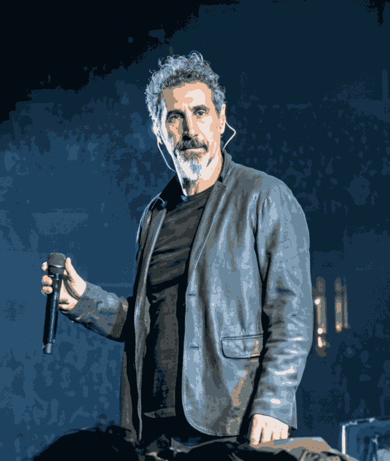
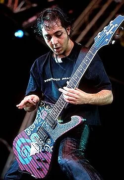
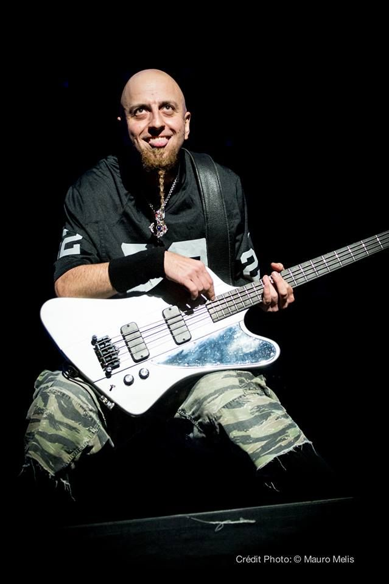

Marcus "Vex" Vance - Lead Vocals, Keyboards
The Voice of Madness and Reason: Vex is the theatrical mastermind behind Toxicity Collective's front line. His vocal style transitions instantly from soaring, operatic melodies and rapid-fire, frantic delivery to aggressive, guttural screams that perfectly mirror the raw political energy of alternative metal's golden era.
The Message: Delivering deeply philosophical and surreal lyrical themes, Vance balances intense crowd command with an unhinged, dramatic stage presence. When the band hits maximum velocity, he keeps the sonic atmosphere locked down with sharp, driving keyboard progressions.

Damian "Riff" Rossi - Lead Guitar, Co-Lead Vocals
The Sonic Architect: Damian is the primary musical engine driving the band's massive wall of sound. His guitar playing seamlessly blends lightning-fast thrash metal riffs, heavy drop-tuned grooves, and intricate, folk-infused melodies.
The Chaotic Counterpart: Rossi handles the prominent co-lead and backing vocals, creating the band's signature frantic dual-vocal attack. While Vex handles the soaring melodies, Damian injects manic harmonies and unpredictable stage energy, keeping the crowd in a state of absolute adrenaline.

Silas "Kross" Kaelen - Bass Guitar
The Pulse and the Groove: Silas anchors the heavy low-end of Toxicity Collective, locking in perfectly with the drums to create an unshakeable rhythmic foundation. Playing with a highly aggressive picking style, his sharp bass tone cuts cleanly through the thick wall of guitars.
The Stage Anchor: Recognized by his intense, commanding stage presence and relentless energy, Silas provides the visual heartbeat of the live show, anchoring the rhythm section while driving the visual chaos on stage.
Jax "The Engine" Thorne - Drums
The Precision Powerhouse: Jax is the precise mechanical anchor holding the band's volatile tempo shifts together. Toxicity Collective's setlist changes directions at breakneck speeds, and Jax commands the kit with hyper-fast double-bass work, explosive fills, and intricate cymbal work.
The Contrast: Maintaining a stone-faced, hyper-focused demeanor behind the kit, Thorne provides a stark, stoic contrast to the frantic movement of the rest of the members while unleashing an absolute onslaught of rhythm.